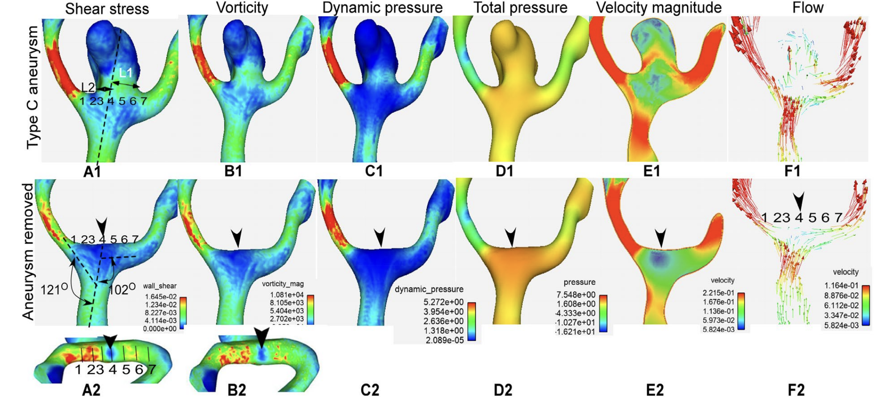
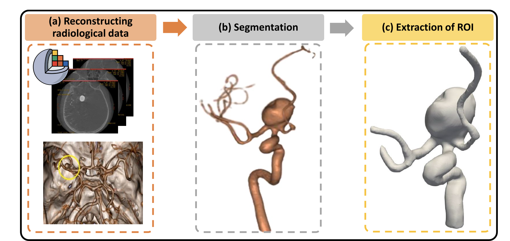
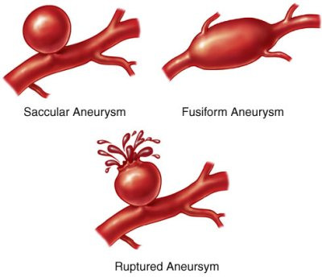

<!DOCTYPE html>
<html lang="ko" data-theme="light">
<head>
  <meta charset="utf-8">
  <meta name="viewport" content="width=device-width, initial-scale=1">
  <title>[Cardiovascular disease] Aneurysm _ part3 | Sehyeog Kim</title>
  <link rel="stylesheet" href="../../../../assets/css/style.css">
  <script>!function(){var t=localStorage.getItem("theme")||"light";document.documentElement.setAttribute("data-theme",t)}();</script>
</head>
<body>
  <button class="theme-toggle" aria-label="Toggle theme"><svg class="icon-sun" viewBox="0 0 24 24" fill="none" stroke="currentColor" stroke-width="2" stroke-linecap="round" stroke-linejoin="round"><circle cx="12" cy="12" r="5"/><line x1="12" y1="1" x2="12" y2="3"/><line x1="12" y1="21" x2="12" y2="23"/><line x1="4.22" y1="4.22" x2="5.64" y2="5.64"/><line x1="18.36" y1="18.36" x2="19.78" y2="19.78"/><line x1="1" y1="12" x2="3" y2="12"/><line x1="21" y1="12" x2="23" y2="12"/><line x1="4.22" y1="19.78" x2="5.64" y2="18.36"/><line x1="18.36" y1="5.64" x2="19.78" y2="4.22"/></svg><svg class="icon-moon" viewBox="0 0 24 24" fill="none" stroke="currentColor" stroke-width="2" stroke-linecap="round" stroke-linejoin="round"><path d="M21 12.79A9 9 0 1 1 11.21 3 7 7 0 0 0 21 12.79z"/></svg></button>

  <header class="mobile-header">
    <span class="site-title">Sehyeog Kim</span>
    <button class="menu-toggle" aria-label="Menu">&#9776;</button>
  </header>
  <div class="sidebar-overlay"></div>

  <div class="site-wrapper">
    <aside class="sidebar">
      <div class="sidebar-bg">
        
      </div>
      <div class="sidebar-profile">
        
        <h1 class="profile-name">Sehyeog Kim</h1>
        <p class="profile-bio">AI &amp; Computational Engineering<br>Personal Blog</p>
        <div class="profile-links">
          <a href="https://github.com/Sehyeogkim" target="_blank" rel="noopener">
            <svg viewBox="0 0 16 16" width="15" height="15" fill="currentColor"><path d="M8 0C3.58 0 0 3.58 0 8c0 3.54 2.29 6.53 5.47 7.59.4.07.55-.17.55-.38 0-.19-.01-.82-.01-1.49-2.01.37-2.53-.49-2.69-.94-.09-.23-.48-.94-.82-1.13-.28-.15-.68-.52-.01-.53.63-.01 1.08.58 1.23.82.72 1.21 1.87.87 2.33.66.07-.52.28-.87.51-1.07-1.78-.2-3.64-.89-3.64-3.95 0-.87.31-1.59.82-2.15-.08-.2-.36-1.02.08-2.12 0 0 .67-.21 2.2.82.64-.18 1.32-.27 2-.27.68 0 1.36.09 2 .27 1.53-1.04 2.2-.82 2.2-.82.44 1.1.16 1.92.08 2.12.51.56.82 1.27.82 2.15 0 3.07-1.87 3.75-3.65 3.95.29.25.54.73.54 1.48 0 1.07-.01 1.93-.01 2.2 0 .21.15.46.55.38A8.013 8.013 0 0016 8c0-4.42-3.58-8-8-8z"/></svg> GitHub
          </a>
        </div>
      </div>
      <nav class="sidebar-nav">
        <a href="/" class="nav-item nav-home">Home</a>
        <span class="nav-group-label">AI</span>
        <a href="/blog/ai/agentic-ai-theory/" class="nav-item">Agentic_AI_Theory<span class="nav-post-count">8</span></a>
        <a href="/blog/ai/deep-learning/" class="nav-item">Deep-learning<span class="nav-post-count">14</span></a>
        <a href="/blog/ai/machine-learning/" class="nav-item">Machine_Learning<span class="nav-post-count">11</span></a>
        <a href="/blog/ai/sensitivity-analysis/" class="nav-item">Sensitivity_Analysis<span class="nav-post-count">3</span></a>
        <span class="nav-group-label">BioMechanics</span>
        <a href="/blog/biomechanics/blood-flow-and-metabolism/" class="nav-item">Blood-Flow-and-Metabolism<span class="nav-post-count">12</span></a>
        <a href="/blog/biomechanics/cardiovascular-diseases/" class="nav-item active">CardioVascular_Diseases<span class="nav-post-count">8</span></a>
        <span class="nav-group-label">Mechanical_Engineering</span>
        <a href="/blog/mechanical-engineering/computational-linear-algebra/" class="nav-item">Computational-Linear-Algebra<span class="nav-post-count">15</span></a>
        <a href="/blog/mechanical-engineering/computational-fluid-dynamics/" class="nav-item">Computational_Fluid_Dynamics<span class="nav-post-count">14</span></a>
        <a href="/blog/mechanical-engineering/continuum-mechanics/" class="nav-item">Continuum-Mechanics<span class="nav-post-count">9</span></a>
        <a href="/blog/mechanical-engineering/engineering-mathematics/" class="nav-item">Engineering_Mathematics<span class="nav-post-count">14</span></a>
        <a href="/blog/mechanical-engineering/finite-element-method/" class="nav-item">Finite-Element-Method<span class="nav-post-count">1</span></a>
        <a href="/blog/mechanical-engineering/fluid-mechanics/" class="nav-item">Fluid_Mechanics<span class="nav-post-count">18</span></a>
        <a href="/blog/mechanical-engineering/gas-dynamics/" class="nav-item">Gas_Dynamics<span class="nav-post-count">24</span></a>
        <a href="/blog/mechanical-engineering/heat-transfer/" class="nav-item">Heat-transfer<span class="nav-post-count">8</span></a>
        <a href="/blog/mechanical-engineering/solid-mechanics/" class="nav-item">Solid_Mechanics<span class="nav-post-count">25</span></a>
        <a href="/blog/mechanical-engineering/thermodynamics/" class="nav-item">Thermodynamics<span class="nav-post-count">14</span></a>
        <a href="/blog/mechanical-engineering/viscous-flow/" class="nav-item">Viscous_Flow<span class="nav-post-count">28</span></a>
      </nav>
    </aside>

    <main class="main-content">
      <div class="breadcrumb"><a href="/">Home</a><span class="sep">/</span><a href="/blog/biomechanics/">BioMechanics</a><span class="sep">/</span><a href="/blog/biomechanics/cardiovascular-diseases/">CardioVascular_Diseases</a><span class="sep">/</span><span>[Cardiovascular disease] Aneurysm _ part3</span></div>
<a href="/blog/biomechanics/cardiovascular-diseases/" class="back-link">&larr; Back to CardioVascular_Diseases</a>
<div class="page-header"><h1>[Cardiovascular disease] Aneurysm _ part3</h1></div>
<div class="post-meta"><span class="meta-item"><span class="meta-label">Date:</span> 2024-09-23</span><span class="meta-item"><span class="meta-label">Category:</span> CardioVascular_Diseases</span><span class="meta-item"><span class="meta-label">Source:</span> <a href="https://jeffdissel.tistory.com/90" target="_blank" rel="noopener">link</a></span></div>
<article class="post-content"><p>이전 포스터에서<br />
뇌동맥류가 무엇인지<br />
왜 발생하는지,<br />
+촬영 방법에 대해서<br />
알아 보았다.<br />
이번 포스터에서는<br />
대동맥류의<br />
[Rupture 확률]<br />
에 대해서<br />
Hemoydnamics 관점<br />
에서<br />
알아보자.<br />
이전 포스터에서 언급 했다 싶이,<br />
인체의 모든 동맥류는<br />
1. 분기점(혈액이 갈라지는 지점)<br />
2. 꺽이는 부분<br />
이 두 곳에서 자주 발생한다.<br />
밑 그림을 보면, 혈관이 90도 꺽인 상횡에서<br />
혈액이 흐르고 있다 (왼쪽 -&gt; 오른쪽으로 흐름)<br />
<br />
실제 aneurysm 환자의 동맥류 발생 이전의 혈관 모델링 모습.<br />
왼쪽에서 부터, 검정색 선을 따라서<br />
distance가 증가한다고 분석해본 결과<br />
꺽이는 부분에서, 급격하게<br />
wall shear stress(WSS) 감소<br />
Wall shear stress Gradient(WSSG) 증가<br />
(Acceleration zone -&gt; Deceleration Zone)<br />
함을 확인할 수 있다.<br />
Plus,<br />
Bifurcation flow<br />
분기점에서도<br />
<br />
(가장 왼쪽사진)<br />
WSS가 감소<br />
+ WSSG가 증가<br />
지점에서<br />
Aneurysm이 발생한 모습을 알 수 있다.<br />
따라서, 유체역학적으로 분석 후,<br />
WSS,WSSG를 기반으로,<br />
aneurysm 혈관벽에 가해지는 힘 분석도 가능하므로,<br />
총<br />
2가지 분석이 가능해 진다.<br />
(Cerebral Aneurysm 이 발생한 환자 기준으로)<br />
1. Cerebral Aneurysm rupture possibility 측정<br />
(Cerebral Aneurysm 이 발생하기 이전 환자 기준으로)<br />
2. Cerebral Aneurysm occurance probability</p>
<hr />
<p>그렇다면, 어떻게 두가지를 분석하는지<br />
구체적인 과정을 살펴보자.<br />
먼저, 지난 포스터에서 언급한<br />
의료촬영을 가지고,<br />
실제 환자의 혈관을 모델링한다.<br />
(segmentation)<br />
거기서 필요없는 부분제거하고,<br />
Region of InterestI (ROI)<br />
추 출<br />
<br />
이후에, 관심 부분의 Mesh를 형성한후<br />
Navier-Stokes Equation based<br />
solver로 계산을 해주면<br />
(solver가 어떤 종류가 있는지는<br />
추후에 다른 포스터로 설명하겠습니다.)<br />
꼭할께요..<br />
유체의 흐름에 관한 정보를 알 수 있다.<br />
<br />
그렇다면, 일단 유체역학적으로<br />
터질 위험도를 측정하기 전에</p>
<hr />
<p>실제 의사들은<br />
Aneurysm이 있는 환자의<br />
터질 위험도를 어떻게 판단하는 지를 알아보자.<br />
1. 크기에 따른 파열 확률<br />
&lt; 5mm<br />
: 파열 확률이<br />
매우 낮음<br />
(연간 파열 확률: 0.1~0.5%).<br />
5~7mm<br />
: 연간 파열 확률 약<br />
1% 미만<br />
.<br />
7~10mm<br />
: 연간 파열 확률 약<br />
1~2%<br />
.<br />
10~25mm<br />
: 연간 파열 확률이<br />
3~5%<br />
로 상승.</p>
<blockquote>
<p>25mm<br />
: 연간 파열 확률이<br />
10% 이상<br />
으로 매우 위험.<br />
2. 형태에 따른 파열 확률<br />
<br />
주머니 모양의 동맥류가 터질 확률이 높으며,<br />
low-neck (혈관과 동맥류 연결 면적이 작을 경우)<br />
터질 위험도가 커진다.<br />
3. 기타 파열 위험 요인<br />
이전 포스터에서 언급 했던 동맥류 발생 요소들이<br />
그대로, 파열 위험 요인으로 속합니다.<br />
고혈압, 흡연, 가족력(유전), 수면부족</p>
</blockquote>
<hr />
<p>다시 혈류역학으로 돌아오면<br />
<br />
혈액의 이동은, 심장의 박동에 의하며,<br />
심장의 박동은 주기가 있는<br />
Pulsatile Flow 이다.<br />
따라서, 한 싸이클 - 심장 1박동을 의미하며,<br />
그때, 속도, Wall shear stress, pressure 등<br />
모든 측정값들이 다르지만,<br />
주기를 가진다는 것.<br />
이제 진짜, 파손위험도를<br />
<br />
(100% 정확한 인과관계는 아니지만,<br />
인과관계가 어느정도 있다고 알려진<br />
연구결과들)<br />
[파손위험도 관련 인자]<br />
1. High Oscillatory Shear Index(OSI)<br />
-&gt; High rupture possiblity<br />
OSI = 한 싸이클동안, WSS의 표준편차<br />
즉, 얼마나 변동이 심한지 나타내는 지표.<br />
2. High Wall Shear Stress Gradient(WSSG)<br />
-&gt; High rupture possbility<br />
혈관의 흐름을 x축이라고 하였을 때,<br />
WSS의 그 축에 따른 변화량 = WSSG<br />
3. Low WSS + High OSI<br />
-&gt; tirrger inflammatory - cell - mediated destructive<br />
4. High WSS + positive WSSG<br />
-&gt; tirrger inflammatory - cell - mediated destructive<br />
5. High Relative Residence Time(RRT)<br />
-&gt; High rupture possbility<br />
동맥류에 혈액이 머무는 시간이 길수록,<br />
= (recirculation or stagnation zone)<br />
= 정체되있는 혈류일 수록, 동맥류에 머무는<br />
혈류의 체류시간이 길다.<br />
6. Low Shear Area Ratio(LSAR) 높을수록<br />
, 터질 확률 증가.<br />
한 펄스 싸이클에서,<br />
하위 10% WSS 면적 (평균 wss대비) / 전체 동맥류 면적<br />
<br />
[Aneurysm formation 관련 인자]<br />
1. Low WSS + High OSI<br />
-&gt; tirrger inflammatory - cell - mediated destructive<br />
2. High WSS + positive WSSG<br />
-&gt; tirrger inflammatory - cell - mediated destructive<br />
3. High Aneurysm Formation Index(AFI)<br />
한 싸이클동안,<br />
AFI = [WSS 의 크기,방향] 의 변화<br />
WSS avg 백터와 WSS가 방향이 다를수록<br />
(사이 각도 theta - 90도에 가까울수록 - cos ~1에 가까울수록 )<br />
즉, 혈류의 property가 급격하게 변화하는 지점<br />
+ Turbulence flow<br />
= 혈관 벽에서 혈류가 오래 머무르는 곳.<br />
4.HIGH Gradient Oscillatory Number(GON)<br />
<br />
전단응력의 방향과 크기가 얼마나,<br />
불안정한지를 나타내는 지표이므로<br />
클수록, Aneurysm formation 확률이 높아진다.</p>
<hr />
<p>결론적으로, 혈관 벽에 가해지는 shear stress가 불규칙적(자주변함) 이거나, 너무 낮으면<br />
-&gt; 혈관 내피세포가 불안정한 혈류에 적응하지 못하여, 중막의 Elastin, Smooth Muscle cell 손상<br />
+ 여러 다른 요인들(흡연, 수면부족, 잘못된 식습관, 유전) 들로 인한 염증작용<br />
-&gt; 으로 최종적으로 혈관벽이 탄성을 잃고, 그대로 늘어나는 현상이<br />
동맥류 Aneurysm 인 것이다.</p></article>
      <footer class="site-footer">
        <p>&copy; 2026 Sehyeog Kim</p>
      </footer>
    </main>
  </div>
  <script src="../../../../assets/js/main.js"></script>
</body>
</html>